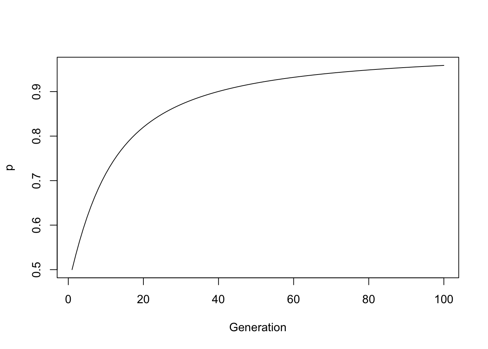
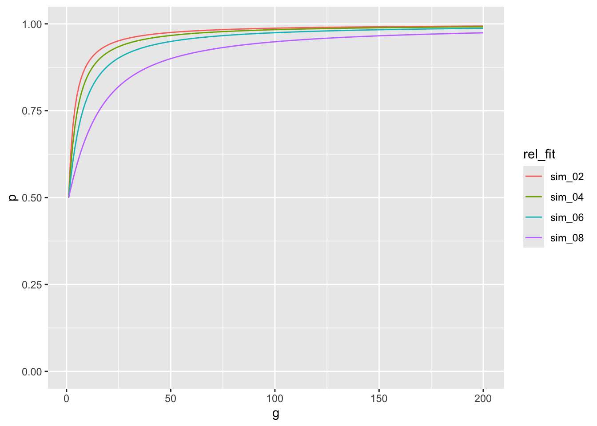
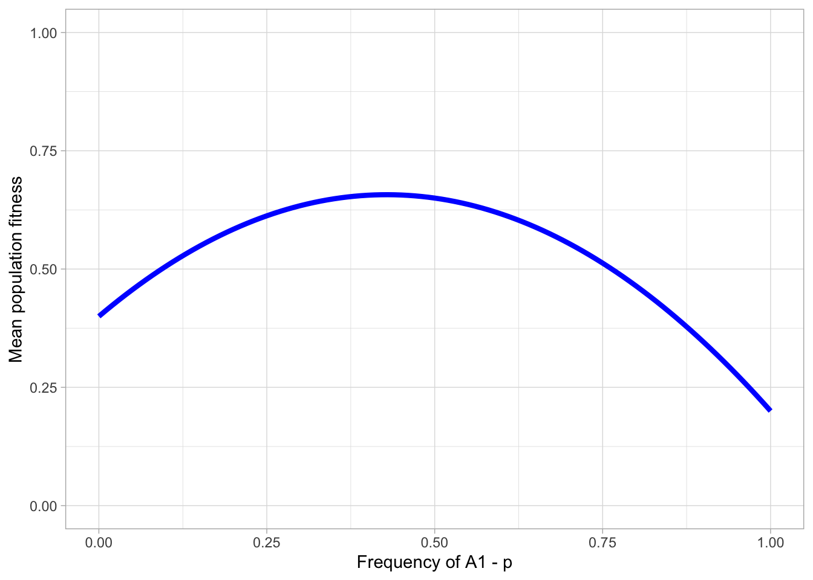
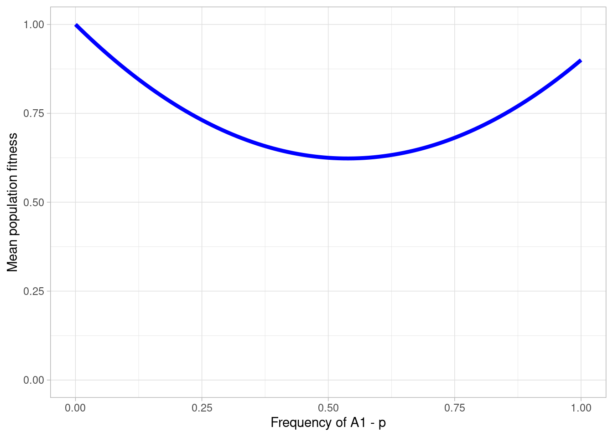
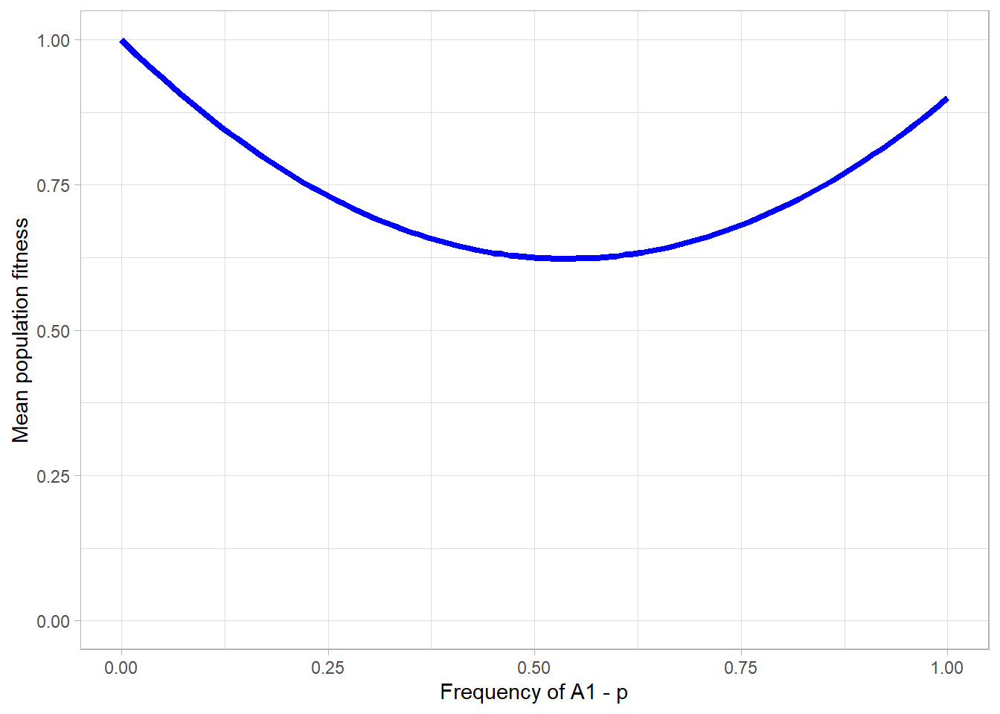

4.2 Evolutionary biology: fitness
4.2.1 Understanding fitness
What do we mean by fitness? In its simplest form, fitness is the defined as whether or not an organism is able to reproduce. Fitness is often mistaken as an individual attribute, but it is actually better explained as a difference in reproductive success among characters, traits or genotypes. If genotype \(A_1A_1\) produces more offspring than \(A_2A_2\) because of a trait the locus produces, we can say \(A_1A_1\) has a higher fitness.
4.2.1.1 Absolute, relative and marginal fitness
So we might talk about absolute fitness - e.g. the expected reproductive success of \(A_1A_1\). In population genetic models though, we more often than not refer to relative fitness - i.e. how fit genotypes are relative to one another. To denote relative fitness, we will follow the notation in the main text - i.e. \(w_{ij}\) for \(A_iA_j\). Assuming locus \(A\) with two alleles, on average genotypes \(A_1A_1\) and \(A_1A_2\) produce 16 offspring each, whereas \(A_2A_2\) produces 11 offspring on average. We calculate relative fitness as follows:
# define the number of offspring per genotype
a <- c(A1A1 = 16, A1A2 = 16, A2A2 = 11)
# find the maximum fitness
max_fit <- max(a)
# determine the relative fitness
rel_fit <- a/max_fitNote here that when defining our vector a, we also actually named each element of it. Names work a little differently in vectors to how they do in a data.frame. For example, a$A1A1 will not work. However a["A1A1"] does.
When calculating relative fitness, we define fitness relative to the maximum fitness. Since both \(A_1A_1\) and \(A_1A_2\) produce the highest number of offspring, their fitness is 1 whereas \(A_2A_2\) has a lower relative fitness.
We might also want to calculate the mean population fitness, denoted as \(\overline{w}\). This is essentially the sum of the relative fitness of each genotype multiplied by the genotype frequency. With R, calculating this is simple - we simply multiply a vector of genotype frequencies with the relative fitness and sum the result. We do this below:
# define the genotype frequencies - note different way to define!
geno_freq <- c(A1A1 = 0.65, A1A2 = 0.15, A2A2 = 0.2)
# calculate mean population fitness
w_bar <- sum(rel_fit * geno_freq)So far, we have dealt with fitness for genotypes. This makes sense because selection acts on genotypes (and the phenotypes they convey). But what if we want to define the fitness of a specific allele? In this case, things become a bit more complicated because allelic fitness depends on the genotype the allele finds itself in. In our previous example, \(A_2\) has a high fitness when it is in the heterozygous \(A_1A_2\) genotype, but not when it is homozygous.
To account for this, we estimate marginal fitness for a given allele \(i\) as \(w^{*}_i\). So for two alleles, the marginal fitness is:
- \(w^{*}_1 = pw_{11} + qw_{12}\)
- \(w^{*}_1 = pw_{12} + qw_{22}\)
Where \(p\) and \(q\) are the frequencies for \(A_1\) and \(A_2\) respectively. In other words, marginal fitness is a component of the fitness of the genotypes an allele occurs in AND the frequency of those genotypes. Let’s calculate the fitness of our alleles using R.
## first calculate the allele frequencies
# define the total number of alleles
n <- 2*sum(a)
# calculate p
p <- ((a["A1A1"] * 2) + a["A1A2"])/n
# calculate q
q <- 1 - p
## now calculate the marginal fitness
w1 <- (p*rel_fit["A1A1"]) + (q*rel_fit["A1A2"])
w2 <- (p*rel_fit["A1A2"]) + (q*rel_fit["A2A2"])Note again that we are explicitly naming elements of the vector to make the mathematics here clearer to you. However this can cause some annoying names to follow around your data. Take a look at w1 and w2 - you should see they have genotype names. The names still hang about because we used them right from the start, so we also remove them here by assigning a NULL:
# strip names
names(w1) <- NULL
names(w2) <- NULL
names(p) <- NULL
names(q) <- NULLNow that we have the basics in place in terms of calculating fitness, we can go on to create a one-locus model of viability selection.
4.2.2 One-locus model of viability selection
When we talk about viability, we simply mean that individuals with different genotypes will vary in their probability of surviving until they are able to reproduce. Variation in viability will therefore effect the ability of individuals to reproduce and thus pass on their genes to the next generation. In other words, allele frequencies will change as a result of selection.
To model this, we will use a locus \(A\) with alleles \(A_1\) and \(A_2\) - each with a frequency \(p\) and \(q\). From the last section, we have the relative fitness of the genotypes with \(w_{11}\), \(w_{12}\) and \(w_{22}\). For simplicity we will assume that fitness remains constant and that the frequency of the zygotes at each generation are in line with the Hardy-Weinberg expectation. Like in the book, we summarise the basics in the table below:
| Genotype | Zygote frequency | Fitness |
|---|---|---|
| \(A_1A_1\) | \(p^2\) | \(w_{11}\) |
| \(A_1A_2\) | \(2pq\) | \(w_{12}\) |
| \(A_2A_2\) | \(q^2\) | \(w_{22}\) |
In our model, we will calculate \(p_{t+1}\) the frequency of allele \(A_1\) after a single generation of selection. This depends on three things: \(p\) - the allele frequency before selection, \(w_1{^*}\), the marginal fitness of the \(A_1\) allele and the difference between this and \(\overline{w}\), the mean population fitness. So our model is basicaly:
\(P_{t+1} = \displaystyle \frac{pw_1^*}{\overline{w}}\)
We will use our previous results to calculate how \(p\) changes after a round of selection:
p_t <- (p*w1)/w_barIf you compare p and p_t, you will see how the frequency in p changed as a result of selection. In fact, this is \(\Delta p\). In R, we can easily calculate it as:
delta_p <- p_t - p If everything worked correctly, your delta_p should be 0.0372093.
4.2.2.1 Simulating selection under the one-locus model
So far, we have recreated the model for a single generation to try and understand how it works. But the beauty of R is that we can easily change the parameters to see how this will vary the change in frequency of our allele. The easiest way to do this is if we write a function that neatly summarises the code we have already explored - then all we need to do to see how the parameters have an effect is simply alter the arguments we give our function.
We will now write a function that takes the initial frequency of p and a vector consisting of the relative fitness of each genotype. This function will then calculate the allele frequencies, the mean population fitness and the marginal fitness of the alleles. Note how this is essentially all the code we have made so far pasted into the body of a function, and p and rel_fit is turned into arguments.
# a simple function to demonstrate the one locus selection model
selection_model_simple <- function(p, rel_fit){
# define q
q <- 1 - p
# calculate genotype frequencies (under HWE)
gf <- c(p^2, 2*(p*q), q^2)
# calculate mean pop fitness
w_bar <- sum(rel_fit*gf)
# calculate marginal allele frequencies
w1 <- (p*rel_fit[1]) + (q*rel_fit[2])
w2 <- (p*rel_fit[2]) + (q*rel_fit[3])
# calculate freq of p in the next generation
p_t <- (p*w1)/w_bar
# return the results
return(p_t)
}With this function, we can play around with the initial frequency of the \(A_1\) allele and the relative fitness of the 3 genotypes. Try a few different values for yourself to see.
# keeping the initial frequency constant
selection_model_simple(p = 0.5, rel_fit = c(1, 1, 0.75))
selection_model_simple(p = 0.5, rel_fit = c(1, 1, 0.5))
selection_model_simple(p = 0.5, rel_fit = c(1, 1, 0.3))We now have a function that calculates the change in p after one generation. To get a better idea of how the model works, we want to see how p changes over multiple generations. We will initialise three values – the intial frequency p, the number of generations we want to simulate selection for, n_gen, and a vector of relative fitness. Like the simulation we made last week, this can be done with a for-loop.
# first initialise the values
p_init <- 0.5
ngen <- 100
rel_fit <- c(1, 1, 0.75)
# make an empty vector to store the values of p
p <- rep(NA, ngen)
# set the first element of p
p[1] <- p_init
for(i in 2:ngen){
p[i] <- selection_model_simple(p = p[i-1], rel_fit = rel_fit)
}
p
#> [1] 0.5000000 0.5333333 0.5640423 0.5921796 0.6178702 0.6412807 0.6625963
#> [8] 0.6820065 0.6996947 0.7158338 0.7305825 0.7440850 0.7564708 0.7678555
#> [15] 0.7783419 0.7880212 0.7969742 0.8052725 0.8129793 0.8201508 0.8268370
#> [22] 0.8330821 0.8389255 0.8444025 0.8495445 0.8543796 0.8589331 0.8632276
#> [29] 0.8672836 0.8711195 0.8747520 0.8781961 0.8814655 0.8845726 0.8875289
#> [36] 0.8903445 0.8930290 0.8955911 0.8980385 0.9003786 0.9026181 0.9047631
#> [43] 0.9068193 0.9087920 0.9106860 0.9125058 0.9142555 0.9159390 0.9175599
#> [50] 0.9191216 0.9206271 0.9220794 0.9234812 0.9248349 0.9261430 0.9274078
#> [57] 0.9286312 0.9298152 0.9309616 0.9320723 0.9331487 0.9341924 0.9352049
#> [64] 0.9361876 0.9371416 0.9380682 0.9389686 0.9398438 0.9406948 0.9415227
#> [71] 0.9423282 0.9431125 0.9438761 0.9446200 0.9453448 0.9460513 0.9467402
#> [78] 0.9474120 0.9480675 0.9487072 0.9493316 0.9499413 0.9505367 0.9511185
#> [85] 0.9516870 0.9522427 0.9527859 0.9533172 0.9538369 0.9543453 0.9548429
#> [92] 0.9553299 0.9558067 0.9562736 0.9567309 0.9571789 0.9576179 0.9580481
#> [99] 0.9584699 0.9588833The change in allele frequency is now stored in your object p. This can easily be plotted straight away with base R’s plot():
plot(p, type = "l", xlab = "Generation")
4.2.2.2 Visualising selection with different parameters.
Now, let’s combine our programming and visualisation skills to demonstrate how varying the parameters really effect the outcome of our model.
First things first, we will take our simulation from the previous section and make it into it’s own function selection_sim. Like before, paste the entire code into the body, and convert the relevant objects to arguments.
## make a simulator function
selection_sim_simple <- function(p_init, rel_fit, ngen){
p <- rep(NA, ngen)
p[1] <- p_init
for(i in 2:ngen){
p[i] <- selection_model_simple(p = p[i-1], rel_fit = rel_fit)
}
return(p)
}Note here how we have a custom function wrapped inside another custom function. This is a really useful concept, and allows for easier use and maintenance of your code. More on this in the assignment!
Anyway, now we can easily simulate selection over multiple generations. For example:
selection_sim_simple(p_init = 0.5, rel_fit = c(1, 1, 0.75), ngen = 1000)So, now we will perform 4 simulations for 200 generations, keeping our initial frequency of p at 0.5. However, we will alter the relative fitness of the \(A_2A_2\) genotype from 0.2 to 0.8.
sim_02 <- selection_sim_simple(p_init = 0.5, rel_fit = c(1, 1, 0.2), ngen = 200)
sim_04 <- selection_sim_simple(p_init = 0.5, rel_fit = c(1, 1, 0.4), ngen = 200)
sim_06 <- selection_sim_simple(p_init = 0.5, rel_fit = c(1, 1, 0.6), ngen = 200)
sim_08 <- selection_sim_simple(p_init = 0.5, rel_fit = c(1, 1, 0.8), ngen = 200)Now we have made 4 simulations. To plot these with ggplot(), we need to make them into a data frame and convert them to long form with pivot_longer(). See the tutorial from week 2 if you’re unsure about why we do this.
sel_sims <- data.frame(
g = 1:200, # number of generations
sim_02,
sim_04,
sim_06,
sim_08
)
# use gather to rearrange for plotting
# note the use of -g to select all the other columns
sel_sims_l <- pivot_longer(sel_sims, -g, names_to = "rel_fit", values_to = "p")Then we can plot the data.
ggplot(sel_sims_l, aes(x = g, y = p, col = rel_fit)) +
geom_line() + ylim(c(0,1))
So you can see from this plot that as the difference between the marginal fitness of \(A_1\) and the mean population fitness \(\overline{w}\) decreases, the proportional increase in allele frequency per generation slows down. More plainly, we can see that when \(w_{22}\) is 0.8, the increase in p per generation is slower than when \(w_{22}\) is 0.2.
4.2.2.3 Getting more from our selection functions
Let’s take another look at our selection_model_simple() function.
# keeping the initial frequency constant
selection_model_simple(p = 0.5, rel_fit = c(0.8, 1, 0.7))You will recall that when we defined the code for this function, we actually calculated quite a lot of stuff inside it - the frequency of the \(A_2\) allele, the genotype frequencies, mean population fitness and marginal frequencies. But the only thing we used return to write out was the frequency of \(p\) in the next generation.
What if we want to extend our function to give us everything we calculated? This will be very useful for the upcoming sections where we will need all these parameters. The code below creates two updated functions for simulating selection. The difference is that instead of outputting a single value, we get a lot of extra information about fitness parameters. The functions are a bit more complicated than what you’ve seen so far, however, so don’t worry if you don’t understand everything that’s happening.
Advanced code:
You need to run this code to complete the tutorial, but you don’t need to understand it.
selection_model <- function(p, rel_fit){
# define q
q <- 1 - p
# calculate genotype frequencies (under HWE)
gf <- c(p^2, 2*(p*q), q^2)
# calculate mean pop fitness
w_bar <- sum(rel_fit*gf)
# calculate marginal allele frequencies
w1 <- (p*rel_fit[1]) + (q*rel_fit[2])
w2 <- (p*rel_fit[2]) + (q*rel_fit[3])
# calculate freq of p in the next generation
p_t <- (p*w1)/w_bar
# make vector for output
output <- c(p = p, q = q, w_bar = w_bar,
w1 = w1, w2 = w2, p_t = p_t)
# return the results
return(output)
}selection_sim <- function(p_init, rel_fit, ngen){
# Set first generation
mod_pars <- t(selection_model(p = p_init, rel_fit = rel_fit))
# simulate for n generations
for(i in 2:ngen){
mod_pars <- rbind(mod_pars, selection_model(p = mod_pars[i-1, "p_t"], rel_fit = rel_fit))
}
# make generations object
g <- 1:ngen
# return the result as a data frame
return(as.data.frame(cbind(g, mod_pars)))
}
Our new selection_model() outputs a vector of useful values. The element p_t denotes \(p\) in the next generation, which was the output of the old selection_model_simple().
selection_model(p = 0.5, rel_fit = c(0.8, 1, 0.7))
#> p q w_bar w1 w2 p_t
#> 0.5000000 0.5000000 0.8750000 0.9000000 0.8500000 0.5142857The new selection_sim() returns a data frame, with 1 generation per row, and the fitness parameters in columns.
selection_sim(p_init = 0.5, rel_fit = c(0.8, 1, 0.7), ngen = 5)
#> g p q w_bar w1 w2 p_t
#> 1 1 0.5000000 0.5000000 0.8750000 0.9000000 0.8500000 0.5142857
#> 2 2 0.5142857 0.4857143 0.8763265 0.8971429 0.8542857 0.5265021
#> 3 3 0.5265021 0.4734979 0.8772990 0.8946996 0.8579506 0.5369449
#> 4 4 0.5369449 0.4630551 0.8780120 0.8926110 0.8610835 0.5458728
#> 5 5 0.5458728 0.4541272 0.8785351 0.8908254 0.8637618 0.5535093All these modeling results will be very useful in the next sections.
4.2.2.4 Can a rare mutant establish in a population?
To understand a selection model like the one we have just developed, it can be useful to see whether a rare mutant is able to establish in a population where the alternative allele is nearly fixed. This is the basis of invasion fitness analysis.
We can do this using a case where heterozygotes have a greater advantage than homozygotes. Using our newly modified selection_model function, we can test this by setting our relative fitness to show a higher relative fitness in heterozygotes and setting p to a high frequency, close to 1.
# keeping the initial frequency constant
selection_model(p = 0.99, rel_fit = c(0.7, 1, 0.8))We see here that w_bar is around 0.7 - which we would expect given the frequency of \(A_1\) (i.e p) and the relative fitness. Invasion fitness of \(A_2\) is equivalent to the marginal fitness for the allele - so 0.99 here - close to 1, the relative fitness for the \(A_1A_2\) heterozygote.
When invasion fitness is greater than resident mean population fitness, the model is not at a stable equilibrium as an allele can easily invade and increase in frequency. What would happen if the frequency of \(A_2\) was almost fixed?
# keeping the initial frequency constant
selection_model(p = 0.01, rel_fit = c(0.7, 1, 0.8))In this case, w_bar (the resident fitness) is higher than when the \(A_1\) allele is fixed, however the marginal fitness of the \(A_1\) allele (the invasion fitness) is higher than this - so in this scenarion \(A_1\) could easily invade and increase in frequency too.
In order for the equilibrium to be stable with heterozygote advantage, the marginal fitness of the two alleles should equal one another. We will return to this in a short while.
4.2.3 Directional selection
Earlier, we simulated selection in order to understand our model. This was an example of directional selection. Now we are going to explore that in more detail - in particular, we want to see how genotypic fitness can alter the outcome of selection. We can visualise this using an adaptive landscape. Here we will use a simplified, 2D landscape - i.e. a plot of mean population fitness \(\overline{w}\) against the allele frequency \(p\).
To simplify our analyses, we will use three different scenarios. In each of them, we will start with a \(p\) of 0.01, and we will simulate 50 generations. In all cases \(A_1A_1\) will have the highest relative fitness of 1 and \(A_2A_2\) the lowest of 0.2. The only thing we will vary is the relative fitness of the heterozygote \(A_1A_2\). Therefore we are simulating three types of genotypic fitness:
- dominance (\(w_{12} = w_{11}\))
- additive inheritance (\(w_{12} = \displaystyle \frac{w_{11} + w_{22}}{2}\))
- recessive (\(w_{12} = w_{22}\))
# set generations
n_gen <- 50
# run simulations
dom <- selection_sim(p = 0.01, rel_fit = c(1, 1, 0.2), n_gen)
add <- selection_sim(p = 0.01, rel_fit = c(1, 0.6, 0.2), n_gen)
rec <- selection_sim(p = 0.01, rel_fit = c(1, 0.2, 0.2), n_gen)We’ll take a brief break from the tidyverse approach now and plot this in base R. This is just because we want you to focus on what we are modelling, rather than reshaping the data too much. Don’t worry too much about how this plot is created, the important thing is analysing the result!
# intialise plot
plot(NULL, xlim = c(0, 1), ylim = c(0, 1),
xlab = "Frequency - p", ylab = "Mean pop fitness", las = 1)
# add curves for each case
lines(dom$p, dom$w_bar, lwd = 2, col = "blue")
lines(add$p, add$w_bar, lwd = 2, col = "red")
lines(rec$p, rec$w_bar, lwd = 2, col = "green")
What does this show us? Well firstly, you might remember that this figure is more or less identical to Figure 4.2 in the main textbook. The blue line is our case of dominance - i.e. both \(A_1A_1\) and \(A_1A_2\) identical, higher relative fitness compared to \(A_2A_2\). In this case, the frequency of the \(A_1\) allele quickly increases but slows down as the allele reaches fixation - hence the plateau at higher values of \(p\). The green curve shows the recessive case. The increase in \(A_1\) is lower when \(p\) is low because then the new mutant genotype is more likely to occur in heterozygotes. However as the frequency increases (i.e. \(p\) goes up), the mean population fitness increases rapidly two. In contrast, the additive case - in red - is just a linear increase with frequency.
We can try looking at the results of these simulations in a slgithly different way - to see how the frequency of \(A_1\) alters over the 50 generations we simulated it for. Again we will use base R code to achieve this.
# intialise plot
plot(NULL, xlim = c(0, n_gen), ylim = c(0, 1),
xlab = "Time (generations)", ylab = "Frequency - p", las = 1)
# add curves for each case
lines(dom$g, dom$p, lwd = 2, col = "blue")
lines(dom$g, add$p, lwd = 2, col = "red")
lines(dom$g, rec$p, lwd = 2, col = "green")All of these curves are S-shaped to some extent - so the transition from high to low frequency is rapit but the approach to fixation is much slower. The most marked difference is in the green line - the recessive case. Here, it takes time for \(A_1\) alleles to occur in \(A_1A_1\) homozygotes, so the new mutation remains at low frequency for quite a number of generations.
4.2.4 Over and underdominance
Earlier on, we learned a bit about heterozygote advantage. This also referred to as overdominance - i.e. when the fitness of the heterozygote is higher than either homozygyote. However, we also touched upon the fact that this can only be stable in under certain conditions - i.e. \(w{_1}^* = w{_2}^*\). We also learned that when \(p\) or \(q\) were 0 (i.e. the population is fixed for either allele), these equilibria are unstable. So at what allele frequency is the population in a stable equilibria?
Previously we simulated data but this time, we are going to run our selection model for a range of values of \(p\) and see where mean population fitness, \(\overline{w}\) is maximised. Then we’ll visualise it to make it clearer to ourselves. As with the book, we will set relative fitness as 0.2, 1 and 0.4 for the \(A_1A_1\), \(A_1A_2\) and \(A_2A_2\) genotypes.
Advanced code:
# set the range of p
p_range <- seq(0, 1, 0.01)
# run selection_model for all values of p
overdom <- map_dfr(p_range, function(z) selection_model(p = z, rel_fit = c(0.2, 1, 0.4)))The code above runs selection_model() for a range of values of \(p\), and wraps the result in a data frame. Now this can be visualised with ggplot to see the stable equilibrium.
# initialise plot
a <- ggplot(overdom, aes(p, w_bar)) + geom_line(colour = "blue", size = 1.5)
a <- a + xlim(0, 1) + ylim(0, 1)
a <- a + xlab("Frequency of A1 - p") + ylab("Mean population fitness")
a + theme_light()
We can see mean population fitness is maximised at around 0.4. This is the stable point on our 2D adaptive landscape.
Underdominance is the opposite of overdominance - i.e. it is heterozygote disadvantage. In short, relative fitness of the heterozygote is lower than either homozygote. Once again, we can visualise the stable equilibrium for a model of overdominance using more or less exactly the same code as before. All we really need to change is the relative fitness which we will set to 0.9, 0.3 and 1 for the \(A_1A_1\), \(A_1A_2\) and \(A_2A_2\) genotypes.
First, we run the model over different values of \(p\).
Advanced code:
# set the range of p
p_range <- seq(0, 1, 0.01)
# run selection_model for all values of p
underdom <- map_dfr(p_range, function(z) selection_model(p = z, rel_fit = c(0.9, 0.3, 1)))Then we plot it using ggplot2!
# initialise plot
a <- ggplot(underdom, aes(p, w_bar)) + geom_line(colour = "blue", size = 1.5)
a <- a + xlim(0, 1) + ylim(0, 1)
a <- a + xlab("Frequency of A1 - p") + ylab("Mean population fitness")
a + theme_light()
Here we see a scenario where underdominance is at a stable equilibria when \(p\) is slightly above 0.5.